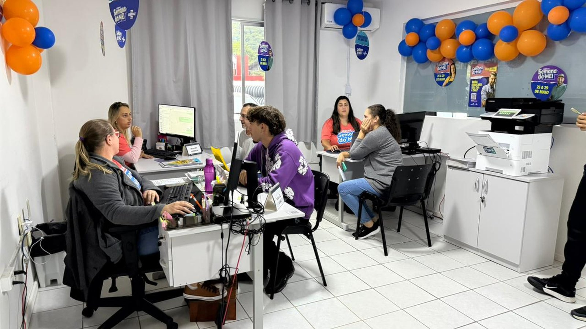

Costa Esmeralda · Cultura
Costa Esmeralda · CulturaFormação gratuita em liderança para quem vive de cultura tem 15 vagas na região, e a inscrição fecha nesta sexta
A outra formação do Sebrae que chegou à região neste mês.
O atendimento acontece na Sala do Empreendedor, no Alto São Bento, em dois turnos. Os temas vão de vendas e marketing a inteligência artificial e plano de negócios.
Em 30 segundos · Modo de Leitura, formato original Santa Informa
A Sala do Empreendedor de Itapema recebe um consultor do Sebrae na sexta-feira, dia 28 de agosto.
O atendimento é gratuito e acontece das 9h às 12h e das 13h às 18h.
O endereço é Rua 902, nº 155, anexo à Secretaria de Obras e Serviços Públicos, no Alto São Bento.
Os temas são atendimento ao cliente, marketing, vendas, inovação, inteligência artificial, liderança e elaboração de plano de negócios.
Pode participar quem já tem empresa e quem ainda vai abrir, MEI incluído.
O contato é pelo (47) 3267-1572, que também atende no WhatsApp.
A Sala do Empreendedor também orienta de graça sobre abertura, alteração, regularização e baixa de empresa.
Poder PúblicoPublicada em Redação Santa Informa

A Sala do Empreendedor de Itapema vai receber um consultor do Sebrae nesta sexta-feira, 28 de agosto. O atendimento é gratuito, individual e acontece em dois turnos, das 9h às 12h e das 13h às 18h. A informação é da Prefeitura de Itapema.
A Sala do Empreendedor fica na Rua 902, nº 155, no anexo da Secretaria de Obras e Serviços Públicos, bairro Alto São Bento. Quem quiser tirar dúvida antes pode ligar para o (47) 3267-1572, número que também funciona no WhatsApp.
A lista de temas anunciada é ampla: atendimento ao cliente, marketing, vendas, inovação, inteligência artificial, liderança e elaboração de plano de negócios. Ou seja, serve tanto para quem quer parar de perder cliente na hora do orçamento quanto para quem ainda está montando a ideia no papel. O serviço atende quem já tem empresa aberta e quer melhorar resultado, e também quem pretende começar agora, incluindo Microempreendedores Individuais.
Segundo Nicko Silva, secretário de Desenvolvimento Econômico e Habitação, "muitas vezes, uma orientação especializada pode ajudar a identificar oportunidades, melhorar processos e encontrar novas formas de chegar ao cliente". Ele afirma que o Município segue ampliando a parceria com o Sebrae "e trazendo conhecimento prático para quem empreende em Itapema".
Fora as consultorias, a Sala do Empreendedor mantém orientação gratuita sobre abertura, alteração, regularização e baixa de empresa. É o balcão onde o MEI resolve pendência de cadastro sem precisar pagar contador para tarefa simples.
Setembro é o mês em que o comércio do litoral começa a se preparar para a temporada. Quem vende sorvete, aluga guarda-sol, faz artesanato ou toca pousada pequena está justamente agora decidindo estoque, preço e contratação. Uma conversa de uma hora com consultor não resolve tudo, mas ajuda a evitar decisão tomada no chute em agosto e cobrada em janeiro. E vale lembrar que setembro também é o mês em que abre a opção pelo Simples Nacional para 2027, prazo que mudou neste ano.
O resumo de 30 segundos está no topo e a versão completa é o texto acima. Aqui ficam as três leituras da casa sobre o mesmo assunto.
Clara, a otimista
Consultoria de Sebrae custa caro no mercado, e aqui sai de graça, na rua ao lado, sem burocracia. Para o dono de negócio pequeno que nunca teve com quem conversar sobre preço e margem, um dia desses vale meio ano de tentativa e erro.
Repare também no que entrou na lista: inteligência artificial. Não é enfeite. É a ferramenta que a padaria da esquina pode usar para escrever anúncio, responder cliente no WhatsApp e organizar pedido. Colocar esse tema num balcão de bairro é adiantar o relógio da cidade.
Seu Prudêncio, o criterioso
Merece atenção a falta de informação sobre agendamento. Um consultor, oito horas, uma cidade com milhares de MEIs: se todo mundo chegar às 9h, muita gente vai voltar para casa sem atendimento e com o dia de trabalho perdido. Uma sugestão útil seria a Prefeitura abrir uma lista por WhatsApp com horário marcado, mesmo que informal. Resolve em uma tarde e evita fila na calçada.
Vale acompanhar também o formato. Consultoria de um dia funciona bem para dúvida pontual, tipo como precificar ou como montar uma vitrine. Para problema de fôlego, como fluxo de caixa desorganizado, uma conversa não fecha o assunto, e o empreendedor precisa saber disso antes de ir, para não sair frustrado.
Dito isso, o desenho da coisa é bom. Balcão fixo no bairro, telefone que atende no WhatsApp, orientação de abertura e baixa no mesmo lugar, e agora consultoria de conteúdo. É serviço público barato, de resultado prático e que chega em quem normalmente não tem acesso a esse tipo de ajuda.
Caco, o sarcástico
Vão ensinar inteligência artificial na Sala do Empreendedor. Daqui a pouco o robô da lanchonete responde melhor que o atendente, e ninguém vai reclamar porque o robô não pede aumento nem falta na segunda.
Sete temas em um dia só, das nove às seis. Se o consultor conseguir falar de tudo isso, ele não precisa de consultoria, precisa de contrato com a Netflix.
E é de graça. Numa cidade onde o metro quadrado disputa primeiro lugar nacional, achar alguma coisa de graça já é notícia. Aproveitem antes que descubram.
Fontes: Prefeitura de Itapema, nota publicada em 24 de agosto de 2026, com a data de 28 de agosto, os horários das 9h às 12h e das 13h às 18h, o endereço na Rua 902, nº 155, no Alto São Bento, a lista de temas da consultoria, o telefone e WhatsApp (47) 3267-1572, a declaração do secretário Nicko Silva e os serviços de abertura, alteração, regularização e baixa de empresa. Sobre o prazo tributário que cai no mês seguinte, veja a matéria da opção pelo Simples Nacional.
Costa Esmeralda · CulturaA outra formação do Sebrae que chegou à região neste mês.
 Brasil · Economia
Brasil · EconomiaO prazo que o empreendedor de Itapema precisa marcar no calendário.
 Brasil · Economia
Brasil · EconomiaOutra porta gratuita para quem quer usar IA no próprio negócio.